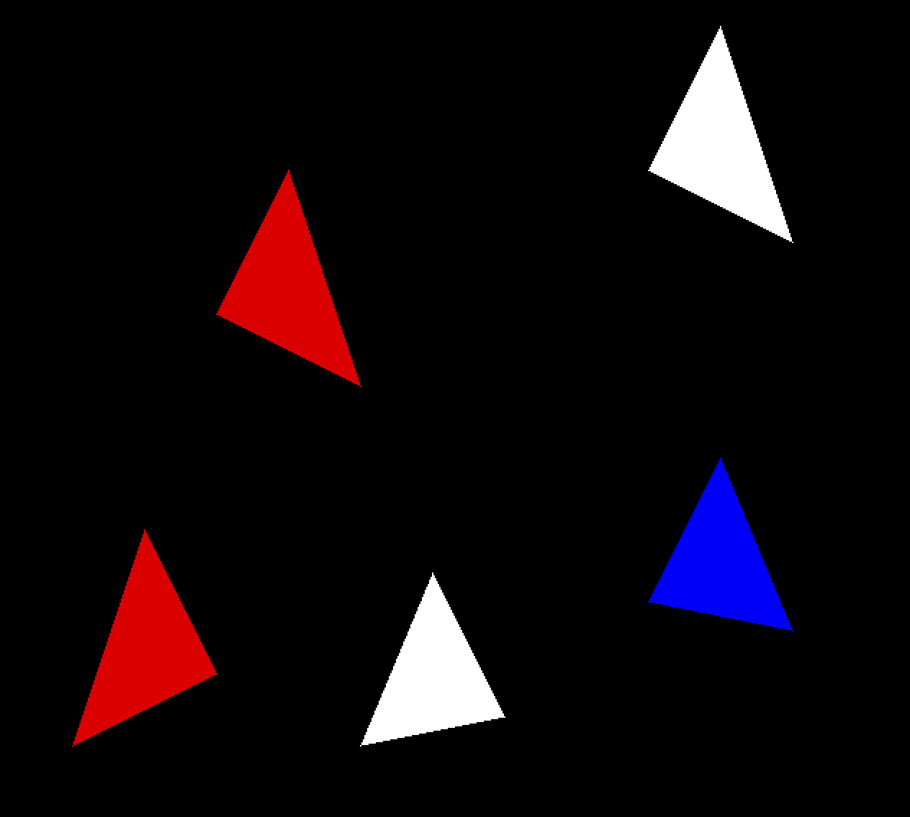
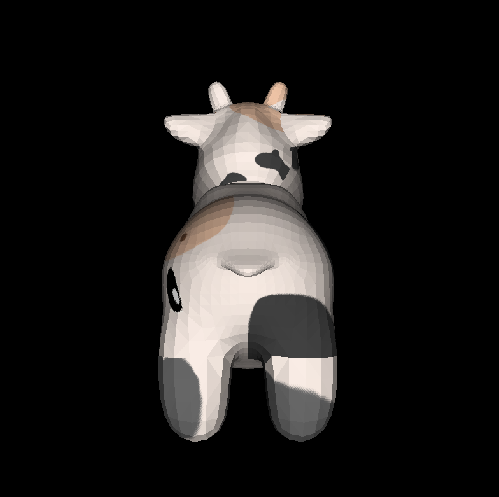

CRast
Progress: Halfway Done(I think)
Lately, I've been interested to gain a deeper understanding of the fundamental components that power a graphics API behind the scenes, such as OpenGl or DirectX so I have decided to build my own 3D Renderer. I'm currently using Real-Time Rendering and tinyrenderer guide as reference while I build the project from the ground up using C.

Heart before I implemented Bresenhams Line Algorithm
To start the project off I used the same strategy from the tiny renderer guide of reading and writing to a TGA file format. This involved building my own library to be able to read, write, create, and manipulate TGA files. Currently, the library is 90% finished however, it does not support all the functionalities that are available within TGA header options to save focus for the main goal of the project. This library opened up the capabilities of drawing to an image format with code. A simple test was run encapsulating all functionality by creating an image drawing a triangle and saving/writing it to disk.
The next step in the project was utilizing OBJ files to load models. I would create my own library to parse object files into a data structure I would use to draw each set of vertices or faces to the screen. I also improved the triangle algorithm to fill the triangle with the specified color using the barycentric coordinate system. With the new triangle algorithm, I created a simple light source pointing at the model and calculated the intensity of the light on each face with the normal of the triangle and the direction of the light source.

Utah Teapot Wireframe loaded in with OBJ library

Utah Teapot with interpolated triangles--no z-buffer
As you can see by the spout of the teapot, the current state of the renderer did not have a z-buffer or painters algorithm implemented, so I used the references I had to implement a z-buffer. The z-buffer keeps track of each pixel on the screen and compares to see which one is the nearest to the camera.

Utah Teapot z-buffer
The next step in the renderer was to use the texture coordinates("vt ...") from the object file to map the textures onto the triangles. After I updated the OBJ parsing library to hold the vertex texture values I altered my triangle function to interpolate the textures throughout each triangle. My approach was to save the texture coordinates and send them to the triangle function where the u and v coordinates would be calculated based on the weights from the barycentric coordinates. I ran into the issue of the texture being flipped because of how I designed my TGA loader. For my use, I have it so that the image's origin is in the bottom left and builds its way up to the top right, however, for the texture coordinates this was swapped. So I had to invert the coordinates by subtracting them by 1.
Some texture code to help visualize whats going on
for(int j = 0; j < 3;j++){
//gather the vertex and vertex texture cordinates
struct Vec3f v = model.vertices[face.indices[j]-1];
struct Vec3f vt= model.vtextures[face.vt_indices[j]-1];
...
text_cords[j] = vt;
}
...
//send the text cordinates & diffuseText to triangle function
texTriangle(screen_coords, text_cords, zbuffer, image, diffuseText, intensity);
void texTriangle(struct Vec3f *pts, struct Vec3f *txtPts, float *zbuffer,
struct TGA_image image, struct TGA_image diffuseText, float intensity){
...
//generate the barycentric cordinates based off Point
struct Vec3f bc_screen = barycentric(pts, P);
...
// calculate the texture u and v interpolated values
float u = 1.0f - (txtPts[0].x * bc_screen.x + txtPts[1].x * bc_screen.y + txtPts[2].x * bc_screen.z);
float v = 1.0f - (txtPts[0].y * bc_screen.x + txtPts[1].y * bc_screen.y + txtPts[2].y * bc_screen.z);
//gather the actual pixel cordiantes
int tex_x = (int)(u*diffuseText.header.width);
int tex_y = (int)(v*diffuseText.header.height);
//gather the color from the diffuesText tga with these cordinates
tex_color = getPixel(diffuseText, tex_x, tex_y);
...
}
Below is a model of a cow named spot I took from Keenans repo of 3d models. At the moment I have no camera controls so enjoy this render of his back (:
Keenans Spot model with diffuse textures

Github
Jan 17, 2025